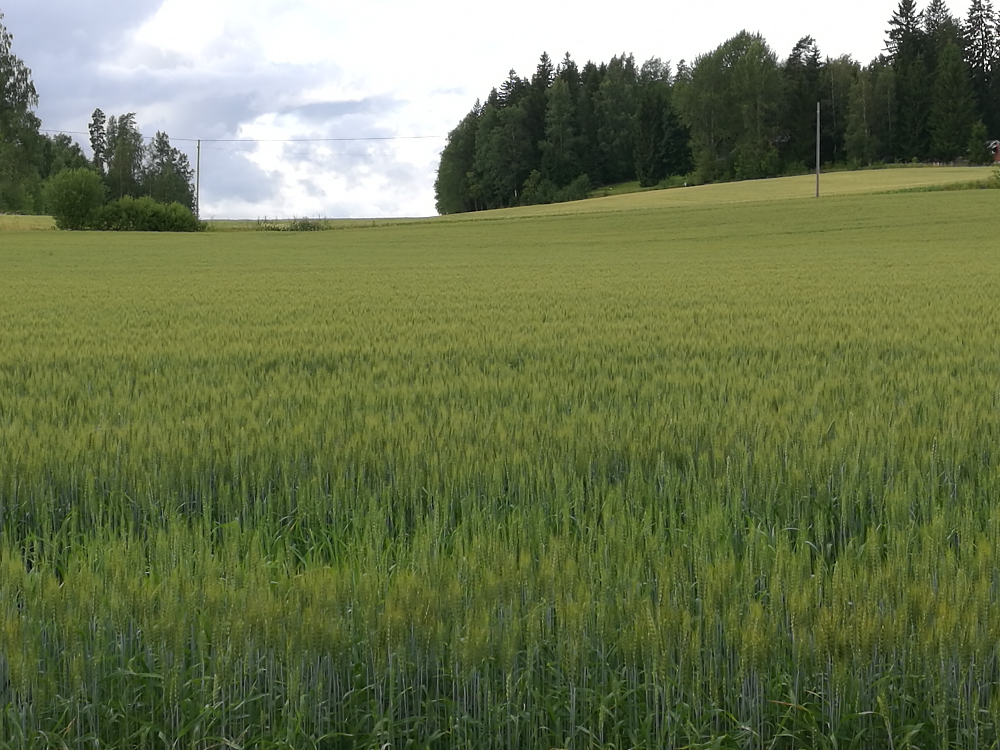

Kasvimaan perustaminen on helppoa alkuun esimerkiksi viljelykehikkoon eli lavankaulukseen. Kehikoita löytyy eri kokokoisia, joten alkuun voi ottaa vaikka pienen ja aloittaa siitä. Kehikossa voi viljellä vihanneksia, yrttejä, juureksia mutta myös koristekasvejakin. Viljelykehikon päälle on hankittavaissa kasvihuone katos, joka aikaistaa kasvukautta keväällä ja pidentää sitä pidemmälle syksyyn. Voit tehdä kasvimaan myös suoraan maahan tai reunustaa jollain muulla kuin lavankauluksella.
Jokaiselle aloittelevalle viherpeukalolle, joka haaveilee omasta sadosta.
Erityisesti hurjasti edistyneelle tulevaisuuden hortnomille Suville muistin virkistykseksi.
Jaanalle ja muille: Tästä se lähtee!